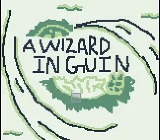
Game Design
A Wizard of Guin
Shipwrecked on an island defined by Four Elements, a young wizard journeys to learn each one and restore the balance.
Read case studyOpen to internships
Storyteller · Multimedia Artist
A creative across animation, film, television, and game design — turning sparks of imagination into stories that move people.
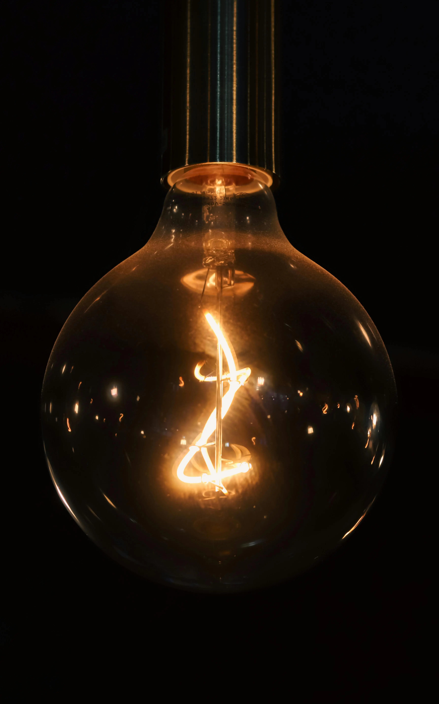
By the numbers
About
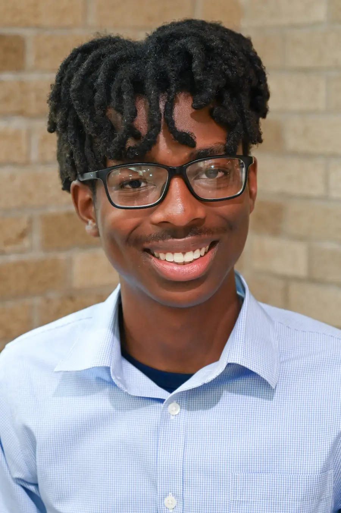
I am a storyteller who has built skills across film, television, and video games — with a major focus in animation.
Currently a sophomore at Texas Tech University, I have contributed to creative projects both on and off campus, including original game design, web design, and storyboarding for short films.
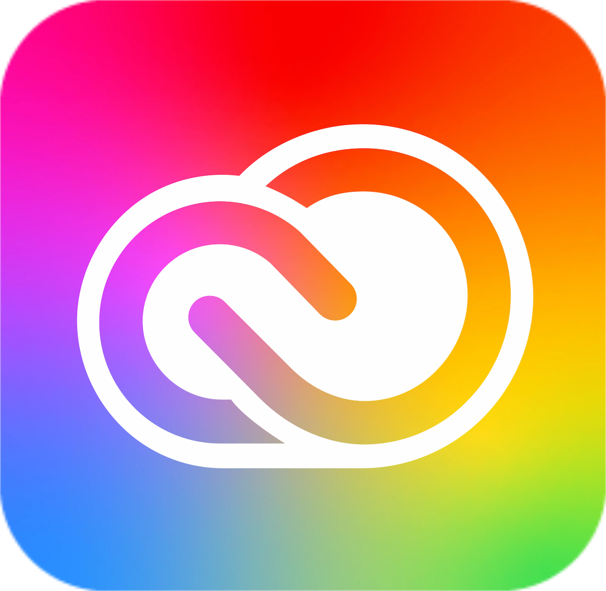
Adobe Creative Suite
VS Code
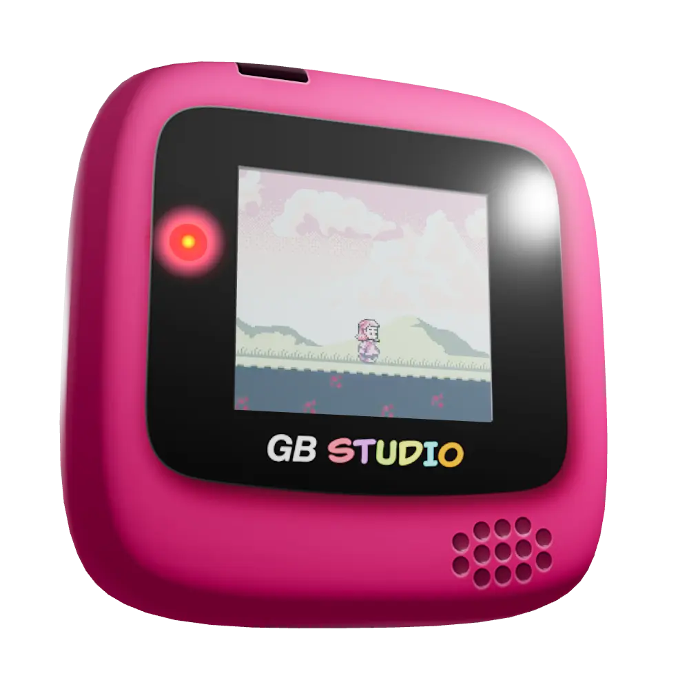
GB Studio
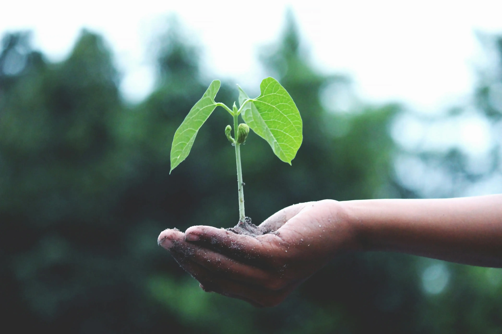
Eagerness to improve
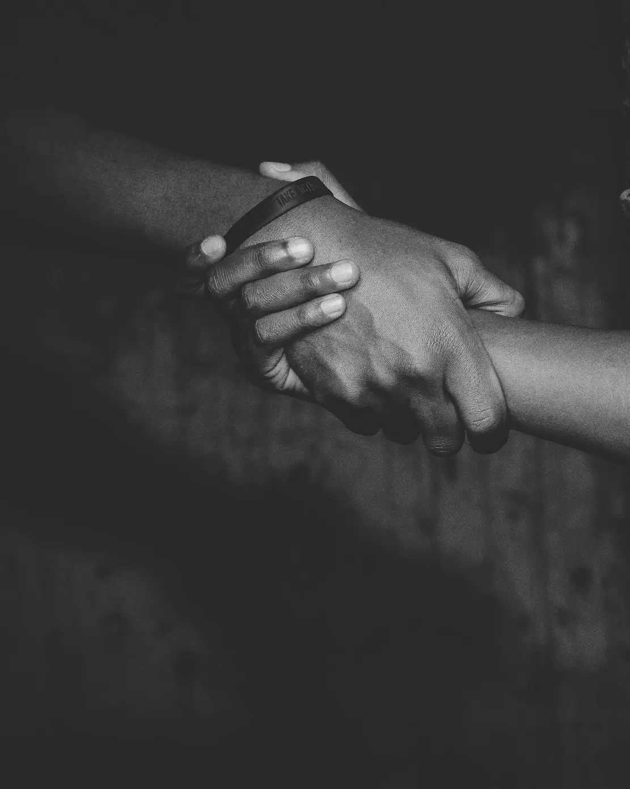
Respect for people
Determination to finish
Selected Work
Three projects that shaped how I tell stories.

Game Design
Shipwrecked on an island defined by Four Elements, a young wizard journeys to learn each one and restore the balance.
Read case study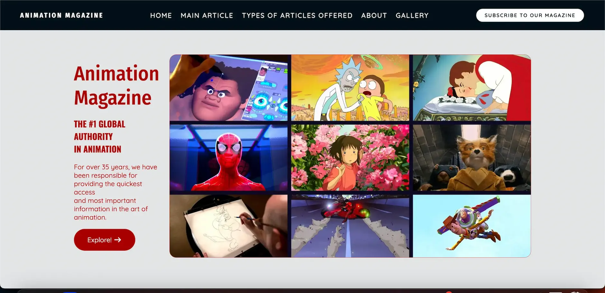
Web Design
A personal version of an animation culture magazine — featured articles, contact section, and an imagery gallery.
Read case study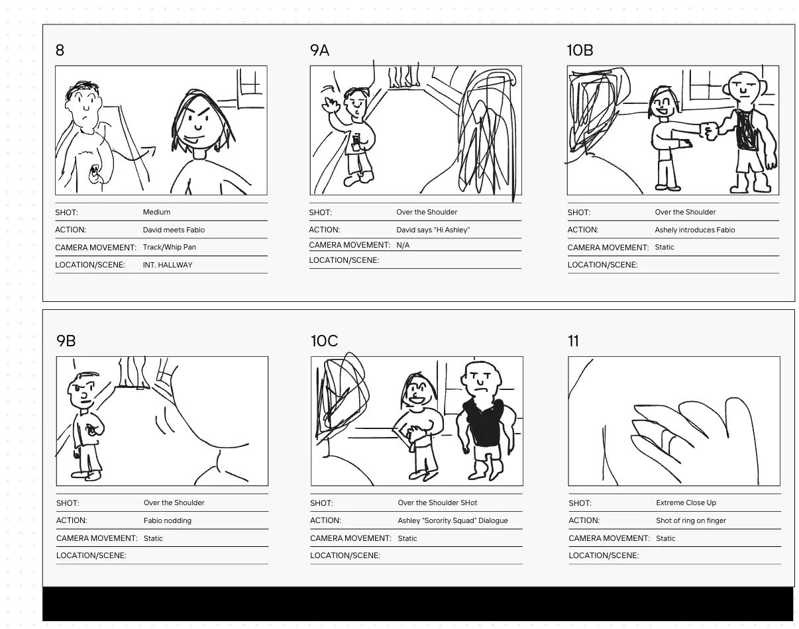
Storyboarding
Storyboards for the Tech Creative Media Association's short film, mapping camera moves and scene composition.
Read case studyCase Studies
Three stories of getting stuck, then unstuck.
Roles: Writer · Artist · Programmer
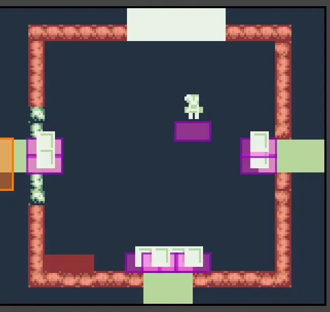
Problem
I needed the quest-giver character to say something new once the player completed an obstacle, but their dialogue stayed locked.
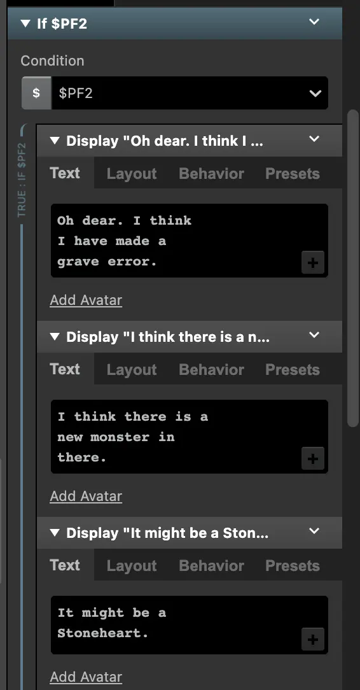
Solution
By learning how to use global variables, the quest-giver could hand off new dialogue and information after each task.
Role: Web Designer (HTML & CSS)
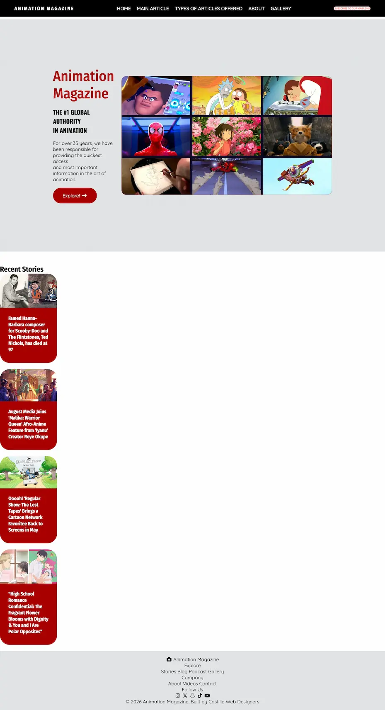
Problem
The initial layout used flex when it should have been a grid, so the hero images stacked on top of each other instead of forming the magazine-cover composition I had drawn.
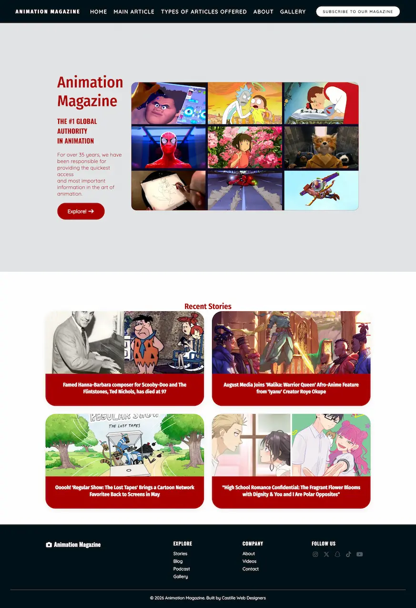
Solution
After getting feedback in office hours, I refactored the layout to use CSS Grid with named template areas. The images snapped into the magazine cover I had sketched.
Role: Storyboard Artist
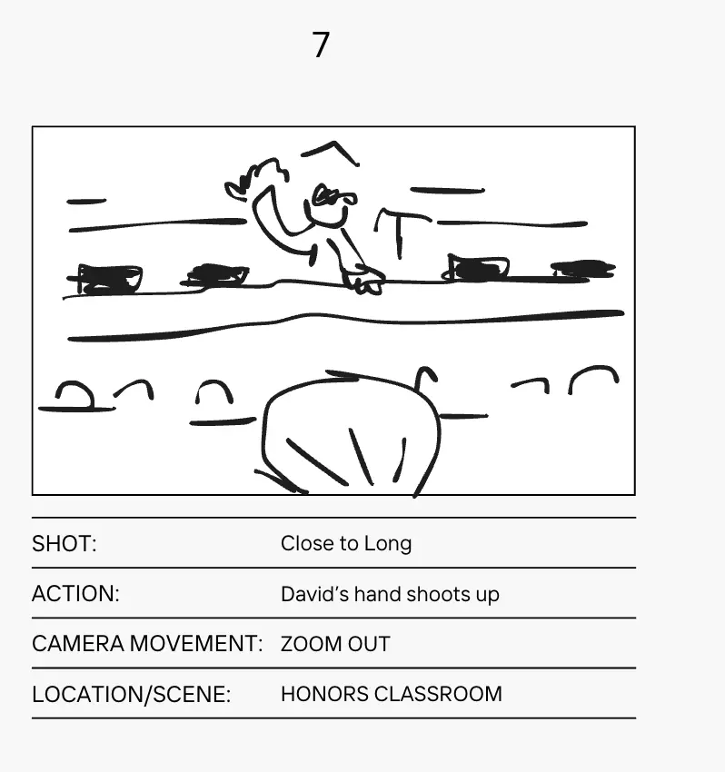
Problem
The scene called for the camera to move from a full shot to a long shot, and I wasn't sure how to communicate that change clearly on paper.
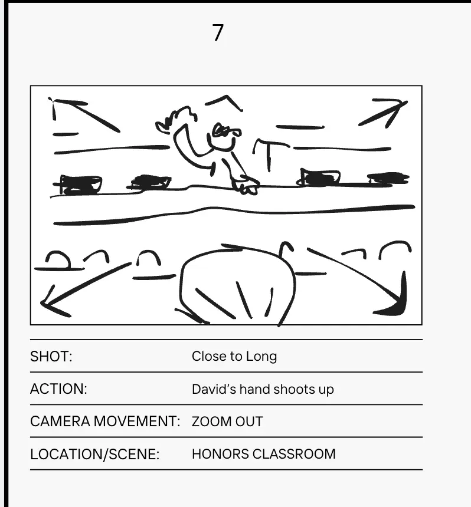
Solution
Studying reference storyboards taught me the convention: when arrows point outward from the subject, they read as a camera pull. I applied that across the rest of the scene.